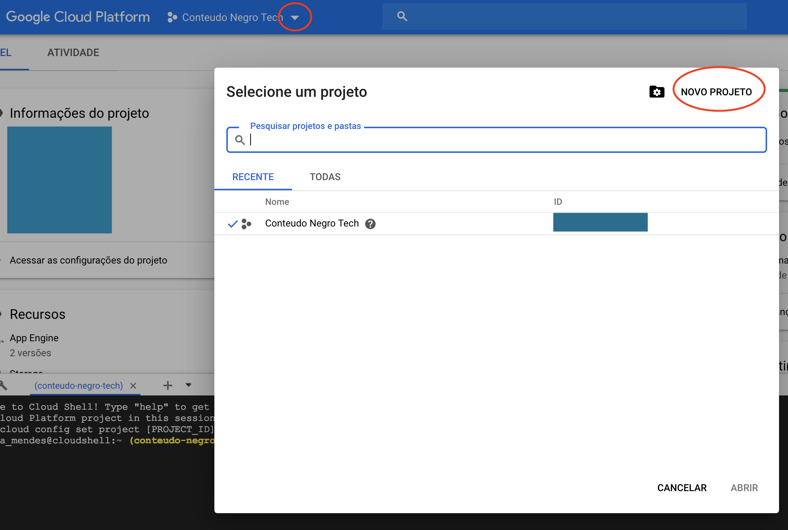
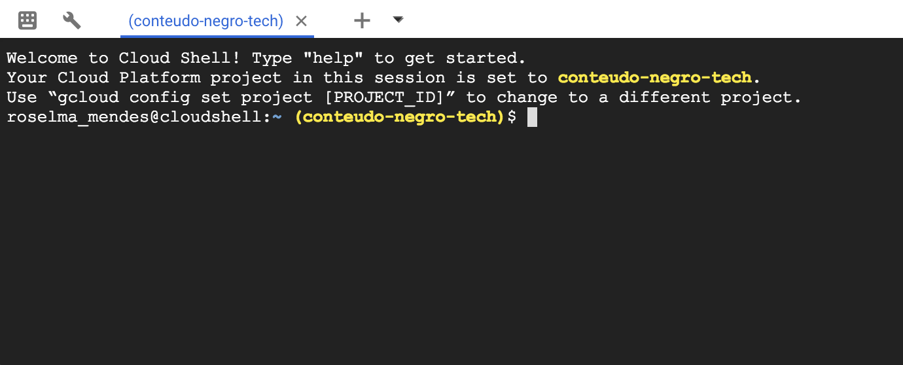
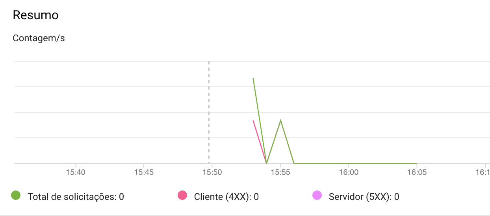
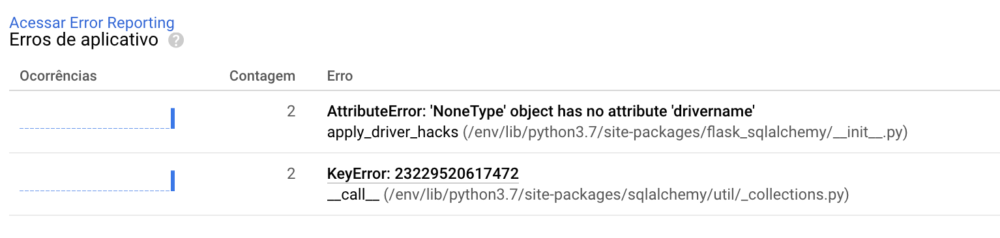
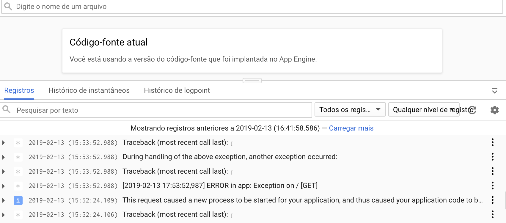
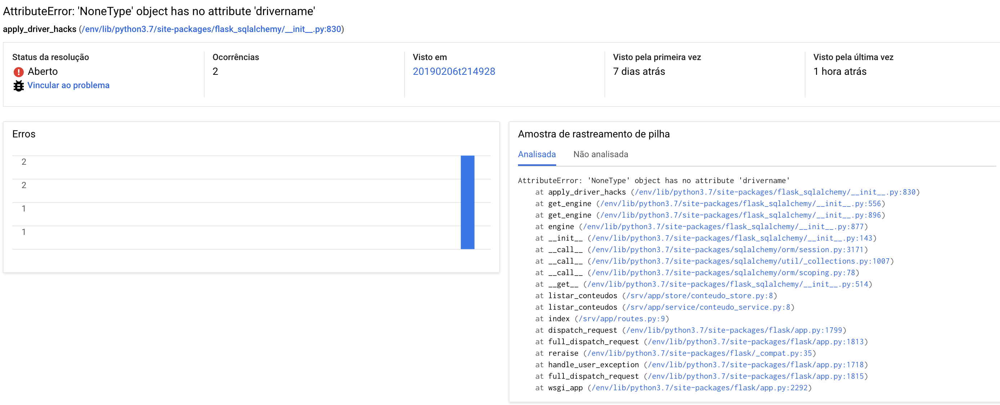
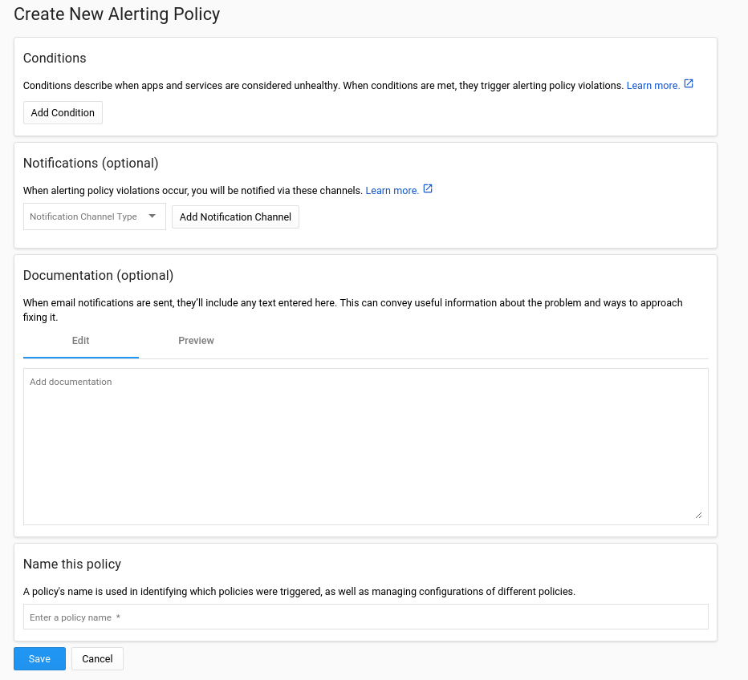

06 February 2019
The App Engine is part of the Google Cloud Platform (GCP) ecosystem to host Web applications. As it says in its page "Focus just on writing code, without the worry of managing the underlying infrastructure.". Besides to deploy your app, it provides a lot of monitoring tools over it.
Other Google Cloud products can be checked here.
I am going to use my repository conteudo-tech-negro. It is a Python project using Flask.
Create an app.yaml in the repository
First of all, the project needs to have an app.yaml. This file is responsible to describe how the deploy will be configured.
For conteudo-tech-negro I have the follow:
runtime: python37
entrypoint: gunicorn app:app && flask db migrate && flask db upgrade
On Google Console create a project
When logged on cloud.google.com, you can access the Console where you can manage, create the Cloud products of Google using an UI. To go to the Console, usually it is placed at the right up, beside your photo.
Along all the functionalities the Console brings, you can use the CLI gcloud. But if you prefer use it locally, it is possible install the CLI in your machine as well.
In this post, I use the Google Console UI.
To create a new project, go to the name of the project beside the title "Google Cloud Platform" and click in the arrow. It will show a window with the list of projects and a button "New project".

Create an app on the Google App Engine
With the project selected, on the Cloud Shell use the command glcoud app create or on App Engine page click on "Create an app". You need to choose a region, the language and the environment. I am using the standard environment.

Clone the project to the environment of Cloud shell
As I am using the Google Console UI, I need to clone the repository to this.
Open the Cloud shell and run the git clone of the project. On the project folder, run gcloud app deploy. Now the app is available on project-name.appspot.com
But my app got errors...


Not only host your application in the infrastructure, Google Cloud allows to use monitoring tools to follow the health of those services deployed.
In the Google world, who takes care of Monitoring is the Stackdriver. To use with Google Cloud and AWS, Stackdriver is a platform to manage techniques in monitoring for your applications and/or infrastructure.
Logs
To see the logs of the app, on the Google Console UI, on the menu at left side, go to StackDriver, then Logs.
As the page is splitted in two sections (up and down), at the down section click on Logs. It will show all the last logs.

Error Reporting
Other Stackdriver tool is the Error reporting. It shows the identified errors in the logs.
If I clicked in one of those, it opens a page with more details about the error log.

It is possible to link an error log with an issue in your repository.
Alerts

To create alerts on GCP it is necessary to create a workspace for the project. There you need to create policies where you can define conditions, notifications and any type of documentation you want to send with the alert.
To create a workspace, on Google Console UI at the left menu, go to Stackdriver, then Monitoring. It will trigger the creation of a workspace for the project. More info about creating policies on Stackdriver Monitoring here.
Other interesting tools on Alerts are the UpTime Checks.
It was difficult to understand how to deal with sensible information on GCP. Basically my application needs to read the database uri which has sensible information including the password. The good practice is to read it from an environment variable to avoid secrets on the code. But the thing is how to load environment variable while deploying and keep the secrets safe on GCP?
In the app.yaml, you can use the keyword env_variables to set environment variables for your app. However, as I mentioned before, having secrets in this file, commited in a Github repository, is definitely not a good thing to do.
After reading many times the Google documentation and stackoverflow, I got this approach:
Have an encrypted file called env.yaml in the repository. It is encrypted using the KMS (Key Management Service), other Google Cloud product;
Include the env.yaml file in the app.yaml to "import" the needed environment variables;
When deploying it to app engine:
a. I need to decrypt the env.yaml;
b. call the command gcloud app deploy which will use the env.yaml to load the environment variables.
Other approaches I found on the Internet:
It was an adventure make the database works. I have to change the original code that worked already on Heroku:
I needed to understand how to connect to the socket connections with psycopg2 library. Outdated information in the App Engine standard environment documentation;
I struggled to get an approach to run the migrations on the database with Flask Migrate. At the end I added the migration command on the initialization of the server, programatically. Before I could use flask db upgrade deploying in Heroku but App Engine doesn't allow run more than one command on the entrypoint for the deploy. Also, I couldn't find an "easy" way to run commands on the application machine;
It is possible to access the app on https://conteudo-negro-tech.appspot.com/. To check the code: https://github.com/NegraTec/conteudo-tech-negro
Also I have another example of application on GAE: https://github.com/roselmamendes/vamos-fazer-compras
Best practices for securing your Google Cloud databases
Google App Engine and Python: a correct way to store configuration variables